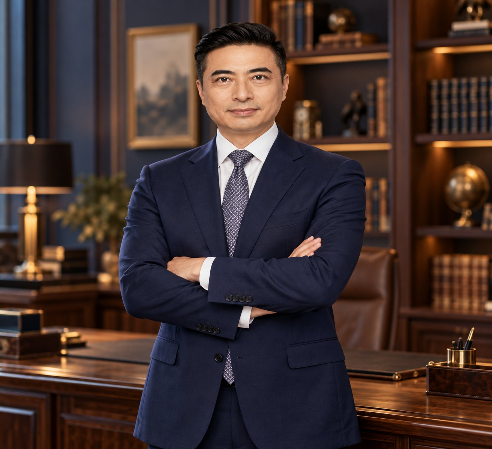

넥센그룹에서 250명 조직과 손익을 책임진 운영 임원으로 일한 뒤, 2024년부터 하노이에서 한국 기업의 베트남 진출을 이끌고 있습니다. 방위산업, 산업단지, 항만, 반도체, 헬스케어 등 50여 개 프로젝트의 경험을 바탕으로 C-level 임원 자문부터 독립 컨설팅까지 수행합니다.

제조기업의 운영 현장에서 쌓은 28년의 판단력과 베트남 현지에서 검증한 프로젝트 경험을 결합합니다. 보고서에서 끝나지 않고 파트너 발굴, 협상, 인허가, 운영 구조 설계까지 연결합니다.
해외영업, 외환, 수출입, 물류, SCM, 경영관리를 거쳐 7개 팀 250명 조직의 손익을 총괄했습니다. 한국해양대와 부산대 두 석사 과정의 이론이 현장 판단의 기준이 됩니다.
방위산업, 부동산·산업단지, 항만, 반도체, 헬스케어, 소비재 등 서로 다른 산업의 가치사슬과 의사결정 구조를 빠르게 구조화합니다.
자체 에이전트 'Hermes AI', 브라우저 에이전트 Aside, 5종 이상의 LLM을 역할별로 연결해 전략보고서 초안을 1~2주에서 1~2일로 단축하고, 사실·추정·미확인을 구분해 보고합니다.
기업 규모와 단계에 맞춰 C-level 자문, 프로젝트 PM, 독립 컨설팅 세 가지 방식으로 참여합니다.
시장조사부터 법인·공장 설립, 산업단지 입지, 인허가, 파트너 발굴까지 진출 전 과정을 설계합니다.
공급사 발굴과 실사, 기술 규격 협상, 조달 구조 설계로 단일 공급처 리스크를 낮춥니다.
정부·공공기관 조달과 협력 채널을 분석하고, 한국 기업의 접근 전략과 제안 구조를 수립합니다.
IR 자료 검토, 사업 타당성 분석, 자산 매각·구조조정 전략과 로드쇼를 지원합니다.
조사, 교차검증, 레드팀 실사, 보고서 작성을 AI 워크플로로 설계해 의사결정 속도를 높입니다.
바이브 코딩으로 기업 홈페이지, 제안서형 웹사이트, 진단 도구, 업무용 웹앱을 빠르게 제작합니다.
제가 직접 기획하고 바이브 코딩으로 구축해 운영 중인 베트남 진출 진단 사이트입니다. 정보를 입력하면 진출 전략을 단계별로 진단하고, 조사용 프롬프트를 생성하며, 복수 AI 답변을 교차검증해 보고서 형태로 정리합니다.
2024년 1월 SMBL Vietnam 전무이사로 합류한 뒤 현지 네트워크와 AI 업무 체계를 직접 구축해 왔습니다.
2024년 1월부터 현재까지 수행한 업무를 영역별로 정리했습니다. 고객사명은 비밀유지 의무에 따라 업종 중심으로 표기합니다.
한국 제조·물류·인프라 기업의 베트남 시장 진입과 FDI 프로젝트를 총괄하고, 방위산업·산업단지·항만·반도체·헬스케어 등 다산업 프로젝트 50여 건을 컨설턴트 1인 체제로 동시 운영했습니다. 2024년에는 넥센 기술고문(비상근)을 병행하며 베트남 컨설팅 활동으로 전환했습니다.
과제, 접근, 산출물 순서로 정리했습니다. 상대방과 세부 수치는 비밀유지 범위 안에서 면담 시 설명드립니다.
SMBL 프로젝트 폴더를 전수 조사한 마스터 트래커(2026.08 기준)를 바탕으로 정리한 51건입니다. 심화 15건, 중간 이상 13건, 경량 23건으로 분류했습니다.
복수의 AI를 역할별로 연결해 조사, 검증, 보고서 작성의 속도와 신뢰도를 함께 높입니다.
통상 1~2주 걸리던 전략보고서 초안을 단축했습니다.
컨설턴트 1인 체제에서 심화 15건을 포함해 동시 관리했습니다.
2개월간 50건 이상의 일일 인텔리전스 보고서를 무중단으로 생성했습니다.
교차검증과 레드팀 실사로 보고서의 신뢰도를 확보합니다.
에이전트 2종과 LLM 5종을 조사, 검증, 구조화, 편집 역할로 나누어 운영합니다. 한 모델의 답을 그대로 쓰지 않고 반드시 교차검증합니다.
기업실사(CDD), 시장조사, 전략보고서 초안을 자동화하는 컨설팅 전용 에이전트
웹 기반 업무를 대신 수행하는 AI 브라우저 에이전트. 정보 수집, 문서 발급, 시트 정리, 정기 모니터링 자동화에 활용
보고서 구조화와 작성, 계약 검토, 바이브 코딩
교차검증, 다국어 문서와 계약 검토, 초안 작성
대용량 자료 분석과 심층 조사, 프로젝트 노트북 활용
출처 기반 사실 조사와 최신 정보 확인
프로젝트 자료를 근거로 답변을 검증하는 지식 베이스
기업 홈페이지, 진단 도구, 업무용 웹앱을 AI로 직접 제작·배포
해외 신공장 3곳의 물류 구축, 글로벌 물류 위기 대응, AEO 인증 등 현장에서 검증한 경험이 고객의 실행 계획에 반영됩니다.
한국해양대학교 해양금융·물류대학원(항만물류관리)과 부산대학교 국제전문대학원(국제무역·항만관리)에서 석사 과정을 이수했습니다. 두 과정 모두 팀장·임원으로 재직하며 야간·주말에 병행했습니다.
물류관리사, 국제무역사, 무역영어, 유통관리사 등 실무 자격이 다루는 물류·무역·유통 지식은 석사 과정에서 이론과 사례 연구로 폭넓게 학습했고, 수출입·SCM·경영관리 현장에서 즉시 적용했습니다. 자격 하나가 증명하는 범위보다 넓고 깊은 학습 기반을 갖추고 있습니다.
“제조 현장의 판단력과 베트남 현지의 실행력을 결합해, 기업의 다음 단계를 함께 설계합니다.”
1996년 수출 실무로 시작해 외환, 수출입, 물류, SCM기획을 거치며 넥센그룹에서 28년을 보냈습니다. 재직 중 야간·주말 과정으로 한국해양대학교 물류학 석사와 부산대학교 국제전문대학원 석사를 마치며 현장의 경험을 이론으로 정리하는 습관을 만들었습니다. 이 경험은 고객의 문제를 구조로 보고 끝까지 실행하는 컨설팅의 바탕이 되었습니다.
2024년 하노이에서 SMBL 전무이사로 새 커리어를 시작해 방위산업, 산업단지, 항만, 반도체, 헬스케어 등 50여 개 프로젝트를 수행했습니다. 국방부 연계 조달 프로젝트에서 규격 전환 합의를 이끌었고, 현재는 방산 협력과 투자유치 프로젝트를 이어가고 있습니다.
복수 LLM 교차검증과 자체 에이전트로 조사와 보고서의 속도를 높이고, 사실·추정·미확인을 구분해 보고합니다. 이 방식을 기업의 의사결정 체계에도 도입하고, 필요한 홈페이지와 업무 도구까지 직접 구현해 드립니다.
C-level 경영 자문, 프로젝트 PM, 독립 컨설팅, 기업 홈페이지 제작까지 문의해 주세요. 영업일 기준 빠르게 회신드립니다.
이메일 문의 베트남 진출 무료 진단 ↗